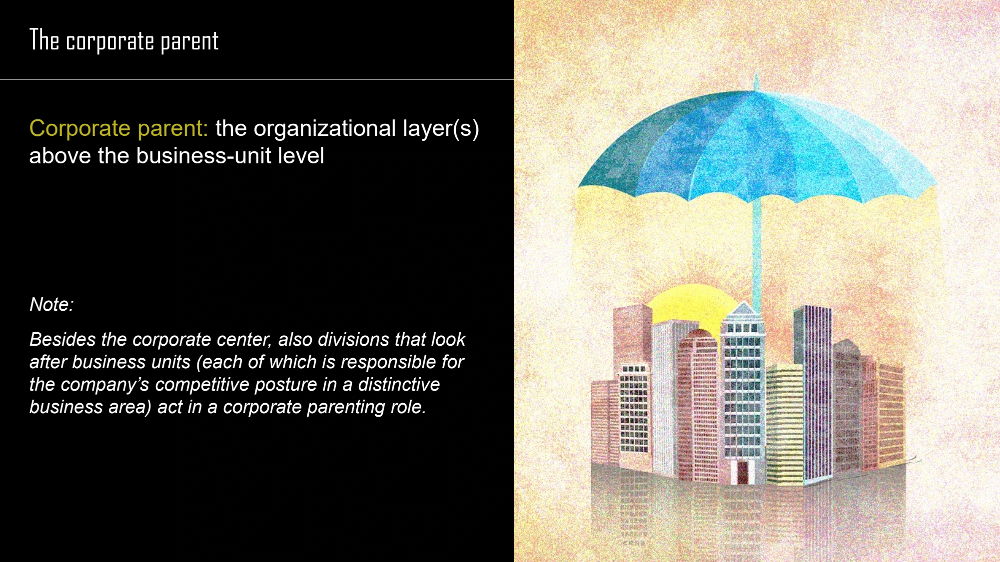

The framework
| Role | Value-creation emphasis | Typical arrangement |
|---|---|---|
| Synergy manager | Sharing activities and tangible resources; transferring skills and intangible resources. | Interdependent divisions coordinate to create joint benefits. |
| Capital orchestrator | Funding and resource allocation across the portfolio. | More autonomous units are evaluated and financed with a company-wide view. |
| Parental developer | Apply the parent's distinctive resources or capabilities to improve businesses. | Intervene where the parent can help a unit achieve more of its potential. |
Key distinctions
Functions of the corporate center
The course distinguishes value creation, administration or loss prevention, and external relationship management. Activities can include setting overall intent, challenging business strategies, monitoring performance, providing expertise, developing managers and enabling collaboration.
The parenting radar
The radar organizes involvement around business direction and development, corporate resources and functions, operational engagement, inter-unit business synergies and company-wide financial synergies. It helps make the parent's proposed contribution explicit instead of treating involvement as an all-or-nothing choice.
A range of involvement
The lecture compares hands-off owner, financial sponsor, synergy creator, strategic guide, functional leader and hands-on manager. These roles range from light to heavy involvement. The appropriate choice depends on the needs of the units and what the parent can genuinely supply.
How to use it
- Specify what each business needs from its parent.
- Identify which parental capabilities are both relevant and available.
- Set the degree of involvement and the corresponding decision rights.
- Compare the contribution with the costs of intervention.
Keep in mind
Ownership alone does not establish parenting advantage. If the parent cannot add value, keeping the business may require reconsideration.
What makes a parental developer different from a synergy manager?
Reveal the explanation
It primarily applies the parent's own distinctive capabilities to units, rather than focusing on links between units.
Read the classroom original
Complete pages from the supplied lecture slides. Select a page to read, enlarge or browse its extracted text. Page numbers refer to the PDF’s physical page order.

 SESSION 4 · PAGE 13
SESSION 4 · PAGE 13Three corporate-center functions
 SESSION 4 · PAGE 14
SESSION 4 · PAGE 14Potentially value-adding activities I
 SESSION 4 · PAGE 15
SESSION 4 · PAGE 15Potentially value-adding activities II
 SESSION 4 · PAGE 18
SESSION 4 · PAGE 18Synergy manager
 SESSION 4 · PAGE 49
SESSION 4 · PAGE 49Capital orchestrator
 SESSION 4 · PAGE 51
SESSION 4 · PAGE 51Internal capital allocation
 SESSION 4 · PAGE 52
SESSION 4 · PAGE 52Benefits of an efficient internal capital market
 SESSION 4 · PAGE 61
SESSION 4 · PAGE 61Portfolio versus integrated organization
 SESSION 4 · PAGE 62
SESSION 4 · PAGE 62Three parenting roles
 SESSION 4 · PAGE 63
SESSION 4 · PAGE 63Parental developer
 SESSION 4 · PAGE 64
SESSION 4 · PAGE 64Parental strategy radar
 SESSION 4 · PAGE 65
SESSION 4 · PAGE 65